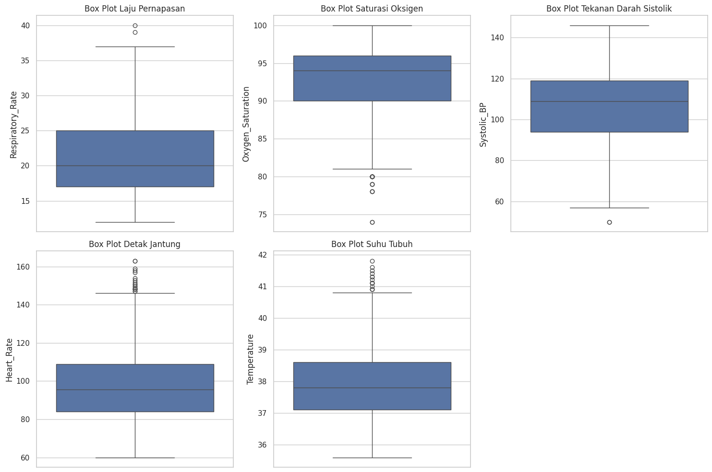

Data Understanding#
Untuk dataset saya menggunakan Health_Risk_Dataset.csv Berikut ringkasan isi dari dataset:
Patient_ID → ID unik pasien
Respiratory_Rate → laju pernapasan per menit (int)
Oxygen_Saturation → kadar oksigen dalam darah (%) (int)
O2_Scale → skala/level oksigenasi (int)
Systolic_BP → tekanan darah sistolik (mmHg) (int)
Heart_Rate → detak jantung (bpm) (int)
Temperature → suhu tubuh (°C) (float)
Consciousness → tingkat kesadaran (A, V, P, U = Alert, Voice, Pain, Unresponsive)
On_Oxygen → status terapi oksigen (0 = tidak, 1 = ya)
Risk_Level → label target (Low, Medium, High)
Eksplorasi Data#
Load Dataset
pip install pandas matplotlib seaborn scikit-learn
Requirement already satisfied: pandas in /opt/hostedtoolcache/Python/3.10.18/x64/lib/python3.10/site-packages (2.3.2)
Requirement already satisfied: matplotlib in /opt/hostedtoolcache/Python/3.10.18/x64/lib/python3.10/site-packages (3.10.0)
Requirement already satisfied: seaborn in /opt/hostedtoolcache/Python/3.10.18/x64/lib/python3.10/site-packages (0.13.2)
Requirement already satisfied: scikit-learn in /opt/hostedtoolcache/Python/3.10.18/x64/lib/python3.10/site-packages (1.7.1)
Requirement already satisfied: numpy>=1.22.4 in /opt/hostedtoolcache/Python/3.10.18/x64/lib/python3.10/site-packages (from pandas) (2.1.3)
Requirement already satisfied: python-dateutil>=2.8.2 in /opt/hostedtoolcache/Python/3.10.18/x64/lib/python3.10/site-packages (from pandas) (2.9.0.post0)
Requirement already satisfied: pytz>=2020.1 in /opt/hostedtoolcache/Python/3.10.18/x64/lib/python3.10/site-packages (from pandas) (2025.2)
Requirement already satisfied: tzdata>=2022.7 in /opt/hostedtoolcache/Python/3.10.18/x64/lib/python3.10/site-packages (from pandas) (2025.2)
Requirement already satisfied: contourpy>=1.0.1 in /opt/hostedtoolcache/Python/3.10.18/x64/lib/python3.10/site-packages (from matplotlib) (1.3.2)
Requirement already satisfied: cycler>=0.10 in /opt/hostedtoolcache/Python/3.10.18/x64/lib/python3.10/site-packages (from matplotlib) (0.12.1)
Requirement already satisfied: fonttools>=4.22.0 in /opt/hostedtoolcache/Python/3.10.18/x64/lib/python3.10/site-packages (from matplotlib) (4.59.2)
Requirement already satisfied: kiwisolver>=1.3.1 in /opt/hostedtoolcache/Python/3.10.18/x64/lib/python3.10/site-packages (from matplotlib) (1.4.9)
Requirement already satisfied: packaging>=20.0 in /opt/hostedtoolcache/Python/3.10.18/x64/lib/python3.10/site-packages (from matplotlib) (25.0)
Requirement already satisfied: pillow>=8 in /opt/hostedtoolcache/Python/3.10.18/x64/lib/python3.10/site-packages (from matplotlib) (11.3.0)
Requirement already satisfied: pyparsing>=2.3.1 in /opt/hostedtoolcache/Python/3.10.18/x64/lib/python3.10/site-packages (from matplotlib) (3.2.3)
Requirement already satisfied: scipy>=1.8.0 in /opt/hostedtoolcache/Python/3.10.18/x64/lib/python3.10/site-packages (from scikit-learn) (1.15.3)
Requirement already satisfied: joblib>=1.2.0 in /opt/hostedtoolcache/Python/3.10.18/x64/lib/python3.10/site-packages (from scikit-learn) (1.5.2)
Requirement already satisfied: threadpoolctl>=3.1.0 in /opt/hostedtoolcache/Python/3.10.18/x64/lib/python3.10/site-packages (from scikit-learn) (3.6.0)
Requirement already satisfied: six>=1.5 in /opt/hostedtoolcache/Python/3.10.18/x64/lib/python3.10/site-packages (from python-dateutil>=2.8.2->pandas) (1.17.0)
Note: you may need to restart the kernel to use updated packages.
import pandas as pd
import matplotlib.pyplot as plt
import seaborn as sns
# Atur style visualisasi
sns.set(style="whitegrid")
# Muat dataset
df = pd.read_csv('Health_Risk_Dataset.csv')
# Tampilkan 5 baris pertama
print("Lima Baris Pertama Data:")
display(df.head())
# Tampilkan informasi umum
print("\nInformasi Umum Dataset:")
df.info()
Lima Baris Pertama Data:
| Patient_ID | Respiratory_Rate | Oxygen_Saturation | O2_Scale | Systolic_BP | Heart_Rate | Temperature | Consciousness | On_Oxygen | Risk_Level | |
|---|---|---|---|---|---|---|---|---|---|---|
| 0 | P0522 | 25 | 96 | 1 | 97 | 107 | 37.5 | A | 0 | Medium |
| 1 | P0738 | 28 | 92 | 2 | 116 | 151 | 38.5 | P | 1 | High |
| 2 | P0741 | 29 | 91 | 1 | 79 | 135 | 38.4 | A | 0 | High |
| 3 | P0661 | 24 | 96 | 1 | 95 | 92 | 37.3 | A | 0 | Medium |
| 4 | P0412 | 20 | 96 | 1 | 97 | 97 | 37.4 | A | 0 | Low |
Informasi Umum Dataset:
<class 'pandas.core.frame.DataFrame'>
RangeIndex: 1000 entries, 0 to 999
Data columns (total 10 columns):
# Column Non-Null Count Dtype
--- ------ -------------- -----
0 Patient_ID 1000 non-null object
1 Respiratory_Rate 1000 non-null int64
2 Oxygen_Saturation 1000 non-null int64
3 O2_Scale 1000 non-null int64
4 Systolic_BP 1000 non-null int64
5 Heart_Rate 1000 non-null int64
6 Temperature 1000 non-null float64
7 Consciousness 1000 non-null object
8 On_Oxygen 1000 non-null int64
9 Risk_Level 1000 non-null object
dtypes: float64(1), int64(6), object(3)
memory usage: 78.2+ KB
Analisis Missing Value Langkah ini dilakukan untuk melihat apakah ada data yang hilang atau tidak lengkap
# Memeriksa jumlah missing values di setiap kolom
print(df.isnull().sum())
Patient_ID 0
Respiratory_Rate 0
Oxygen_Saturation 0
O2_Scale 0
Systolic_BP 0
Heart_Rate 0
Temperature 0
Consciousness 0
On_Oxygen 0
Risk_Level 0
dtype: int64
Kesimpulan: Dataset ini sangat baik karena tidak memiliki nilai yang hilang sama sekali. Ini menyederhanakan tahap pra-pemrosesan data karena kita tidak perlu melakukan teknik imputasi.
Analisis Outlier Outlier adalah titik data yang berbeda secara signifikan dari observasi lainnya. Mereka bisa jadi merupakan data yang valid (misalnya, pasien dalam kondisi kritis) atau kesalahan input.
Cara terbaik untuk mendeteksi outlier pada data numerik adalah melalui statistik deskriptif dan visualisasi box plot.
# Tampilkan statistik deskriptif untuk deteksi awal
display(df.describe())
| Respiratory_Rate | Oxygen_Saturation | O2_Scale | Systolic_BP | Heart_Rate | Temperature | On_Oxygen | |
|---|---|---|---|---|---|---|---|
| count | 1000.000000 | 1000.00000 | 1000.000000 | 1000.000000 | 1000.000000 | 1000.000000 | 1000.000000 |
| mean | 21.511000 | 92.59000 | 1.124000 | 106.160000 | 98.460000 | 37.921000 | 0.274000 |
| std | 5.287517 | 4.47302 | 0.329746 | 17.897562 | 19.694626 | 1.113696 | 0.446232 |
| min | 12.000000 | 74.00000 | 1.000000 | 50.000000 | 60.000000 | 35.600000 | 0.000000 |
| 25% | 17.000000 | 90.00000 | 1.000000 | 94.000000 | 84.000000 | 37.100000 | 0.000000 |
| 50% | 20.000000 | 94.00000 | 1.000000 | 109.000000 | 95.500000 | 37.800000 | 0.000000 |
| 75% | 25.000000 | 96.00000 | 1.000000 | 119.000000 | 109.000000 | 38.600000 | 1.000000 |
| max | 40.000000 | 100.00000 | 2.000000 | 146.000000 | 163.000000 | 41.800000 | 1.000000 |
# Visualisasi Box Plot untuk variabel numerik utama
plt.figure(figsize=(15, 10))
plt.subplot(2, 3, 1)
sns.boxplot(y=df['Respiratory_Rate'])
plt.title('Box Plot Laju Pernapasan')
plt.subplot(2, 3, 2)
sns.boxplot(y=df['Oxygen_Saturation'])
plt.title('Box Plot Saturasi Oksigen')
plt.subplot(2, 3, 3)
sns.boxplot(y=df['Systolic_BP'])
plt.title('Box Plot Tekanan Darah Sistolik')
plt.subplot(2, 3, 4)
sns.boxplot(y=df['Heart_Rate'])
plt.title('Box Plot Detak Jantung')
plt.subplot(2, 3, 5)
sns.boxplot(y=df['Temperature'])
plt.title('Box Plot Suhu Tubuh')
plt.tight_layout()
plt.show()

Observasi dan Kesimpulan:
Laju Pernapasan: Beberapa nilai di atas 35 dianggap sebagai outlier oleh box plot, namun dalam konteks medis, laju pernapasan tinggi (takipnea) adalah gejala klinis yang valid dan penting, jadi tidak perlu dihapus.
Saturasi Oksigen: Beberapa nilai rendah (di bawah 85%) terdeteksi. Ini adalah indikator hipoksemia yang serius dan merupakan data kritis yang valid.
Detak Jantung & Suhu Tubuh: Terdapat beberapa outlier di batas atas. Ini juga merupakan tanda-tanda klinis yang umum (takikardia dan demam tinggi) dan kemungkinan besar data valid.
Tekanan Darah Sistolik: Terdapat outlier di batas bawah dan atas. Tekanan darah 50 mmHg sangat rendah (hipotensi berat) dan 146 mmHg cukup tinggi. Keduanya masih dalam rentang fisiologis yang mungkin terjadi pada pasien sakit.
Tabel distribusi data Heart_Rate, Temperature, On_Oxygen terhadap Patient_ID